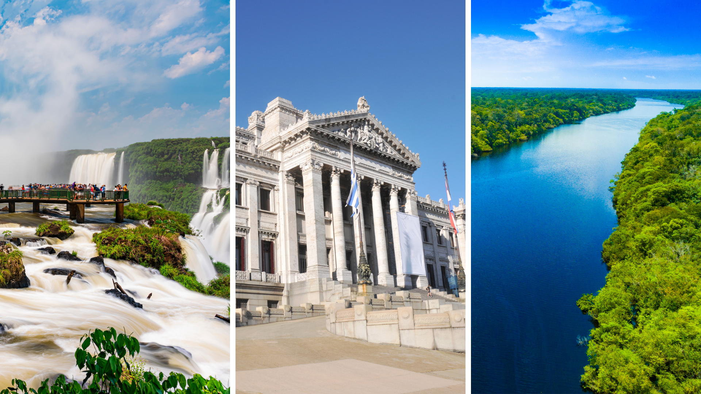

WHAT IS SOUTH AMERICA INCOMING?

VISION
Reaffirm our international leadership as specialists in South American destinations by uniting leading brands in the industry.MISSION
Our mission is to bring our clients personalized and tailored experiences, in which creativity, uniqueness and exclusivity are inherent to our work and philosophy. To be leaders in innovation, sustainable growth and social and environmental responsibility in our region.GOALS
Being a seal that represents the union of the consortium companies, South America Incoming is its own brand but commercially it maintains the identity of its founding companies, Furlong Incoming & Compass Brazil.Provide excellent services to Fit's Tour Operators and Groups as well as Cruise companies, MICE and Luxury clients.
Offer a benefits package to South America Incoming clients. through our loyalty program.
Offer our own regional experiences and programs.
SERVICES
LeisureSpecialists in tailor-made trips, organization of group outings and predefined tourist proposals. Our purpose is to provide unique and exclusive experiences, backed by a personalized advisory service, thus guaranteeing that your clients' journey is memorable.
Mice
Pioneers in the organization of events in Brazil, Argentina and Uruguay. Through a creative, adaptable approach and outstanding execution, our group of professionals creates meetings, events, conventions and incentive programs that impress our clients.
Luxury - Signature Experiences
A careful selection of the most outstanding travel experiences in Brazil, Argentina and Uruguay. Tailor-made trips that comprehensively combine comfort, quality and personal enrichment.
Cruises
Leaders in the planning and execution of all land activities of the most important Cruise companies that arrive in Antarctica and South America. We offer Pre & Post Cruise services, as well as personalized tours and experiences, guaranteeing a perfect and memorable visit on land.
BENEFITS
We offer solutions to regional products: We provide a personalized attention service, through which our clients will connect with a single point of contact in South America Incoming, which will allow them to obtain agile and effective responses to optimize the Planning your clients' trips to South America.We provide you with a single payment point, so that it is not necessary to carry out multiple transactions and, in this way, avoid additional banking costs.
Through our Loyalty program, the trust and support of our clients in the different destinations of the South America Incoming brand. They will reflect the price differential associated with the production volume.
SUSTAINABILITY
For each of the companies that make up South America Incoming, promoting Sustainable Tourism has always been one of the most important pillars and is one of the reasons that motivated us to carry out this alliance. Based on our principles and convictions, we fervently believe that reducing negative effects on the environment and local communities as well as promoting positive effects should be part of our daily agenda. Our commitment is reflected in concrete actions, which are aligned with the principles of sustainability, from waste management, paper recycling, care of light and water in our offices, as well as we commit to training our guides annually. in matters of Sustainability and Social Responsibility; we work with sustainable suppliers; We measure the impact of our excursions to increase our clients' awareness of the impact we have on the environment; We make alliances with NGOs to mitigate the carbon footprint of our passengers and other actions that contribute to our firm commitment to responsible tourism.

CONTACTS
| Mario Zirolli + 54 911 5927 3829 mzirolli@furlongincoming.com.ar |
Carlos Barros +55 21 99821 3551 carlos.barros@compassbrazil.com |
Cristina Grahn +55 21 99467 0560 cristina.grahn@compassbrazil.com |
Nuno Veríssimo +55 21 96464 5404 nuno.verissimo@compassbrazil.com |